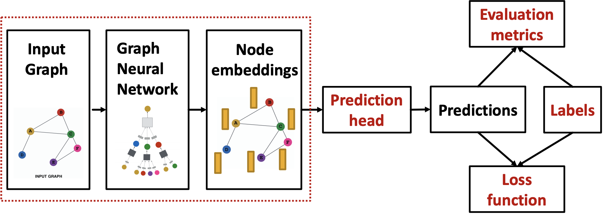
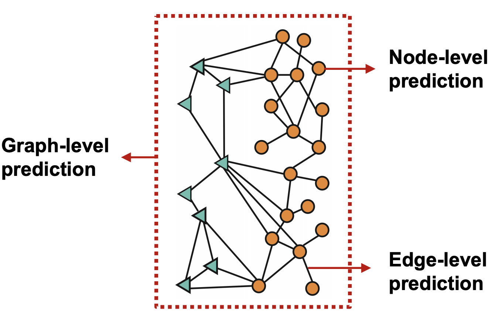
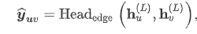
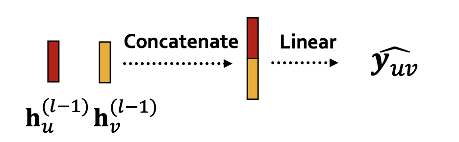
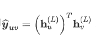
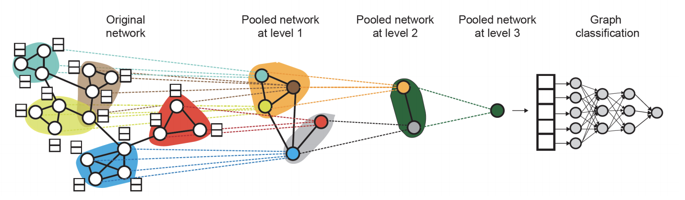

图机器学习6：GNN的训练和应用
GNN的训练和应用

GNN面对的任务
- prediction head有多种类型，包括节点级别的，边级别的和图级别的任务

节点级别的任务
节点级别的任务可以直接使用节点嵌入来完成，假设我们通过GNN得到了d维的节点嵌入向量
- 这里的W是一个
的矩阵而 是一个d维的向量
边级别的任务
边级别的任务可以使用2个节点的嵌入来进行k-way prediction，这个过程可以表示为

而head的选取有如下多种方式：
- Concatenation + Linear，将两个节点嵌入进行拼接再进行线性变换

- 点积运算，即

不过只能用于1-way的prediction，可以使用multi-head的注意力机制来实现k-way prediction
图级别的任务
图级别的任务可以使用所有节点的嵌入向量来完成，
这里的head和GNN中的聚合函数一样，可以使用max，mean和sum等函数将节点嵌入转化成图嵌入。这种操作也叫做图池化(Graph Pooling)，但是这种方法很容易丢失图中的信息。
解决这个问题的方法是使用层级化的池化(Hierarchically pool)，也就是使用激活函数+聚合函数作为head，将节点划分成若干组进行池化之后再将所得结果进行池化，这一过程可以表示为：

监督学习和无监督学习
图学习任务中，有监督的任务是有label的，这些label来自于外部，而无监督的学习任务只能使用节点自身的一些信号，很多时候二者的差别是很模糊的，比如我们如果使用GNN来预测节点的聚类系数，看起来是一个无监督的任务，实际上监督信息已经蕴含了图结构中(因为对于一个确定的图而言，其聚类系数已经可以确定，虽然没有直接计算这些聚类系数作为监督标签，但是聚类系数所带来的局部特性仍然表现在图结构中，很难说GNN有没有学到这些隐含的监督信息)，因此很多时候将无监督学习用“自监督学习”(self-supervised)来代替。
监督学习中的label可以分为节点的label，边的label和图的label，因此最好将要解决的问题规约到这三类label的监督学习中，因为这三类任务最容易把握。
无监督学习中没有标签，但是我们可以使用图中隐含的各类信息来帮助我们完成任务。
损失函数和评价标准的选取
损失函数
对于分类和回归任务，需要视情况选择不同的损失函数和评价标准，分类任务的label是离散的数值，而回归得到的是连续的数值，因此分类任务中常常使用交叉熵作为loss，即：
这里的
而对于回归问题一般采用最小平方损失(MSE)作为损失函数，即：
评估标准
GNN对于回归任务的评估标准往往采用RMSE和MAE，而对于分类任务，如果是分类任务可以使用准确率，对于二分类问题还可以使用查准率和召回率以及F1-Score
数据集的划分
训练GNN的过程中，需要对数据集进行一定的划分，将数据集分成训练集，测试集和验证集在图像的任务中，而图数据集的划分是比较特殊的。在CNN处理图像的任务中，一张图像就是一个数据点，并且图像和图像之间是互相独立的，而在图任务中，以节点分类任务为例，每个节点是一个数据点，但是数据点之间不是完全独立的，因此图数据集在划分的过程中有一定的讲究。